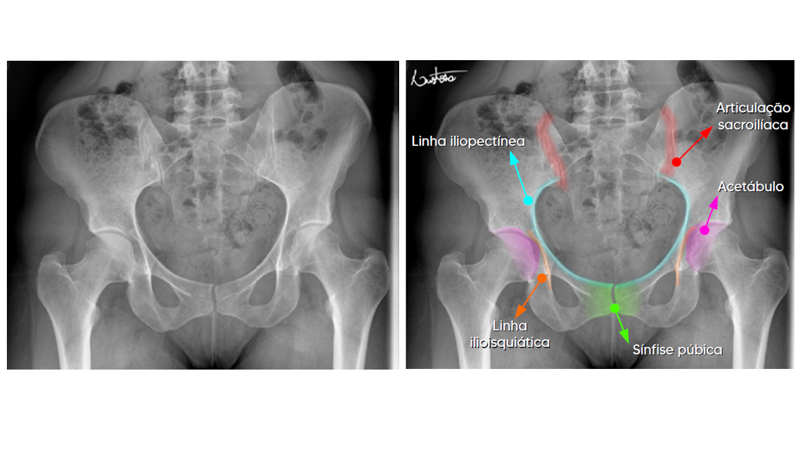
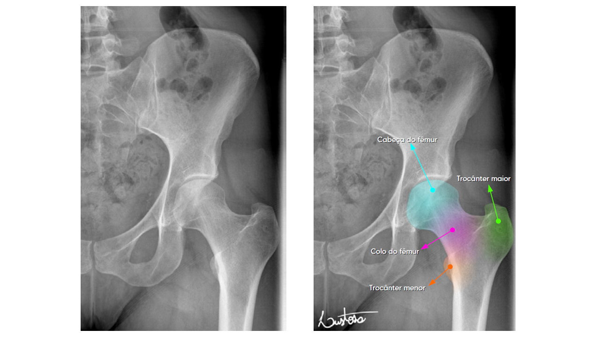

A pelve serve como a base para o tronco e forma a conexão entre a coluna vertebral e os membros inferiores.
Consiste em três ossos — íleo, ísquio e púbis.
Estes 3 ossos se fundem na puberdade para formar os chamados ossos inominados, se unindo ainda à cartilagem encontrada no acetábulo.
O quadril consiste na união destes 3 ossos + o osso fêmur.
Quando a pelve é estudada com os ossos sacro e cóccix, denominamos “bacia“.

